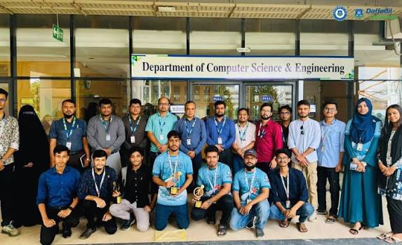

About the Department

The Department of Computer Science and Engineering (CSE) serves as a dynamic hub for technological innovation and academic excellence, bridging the gap between theoretical computation and practical engineering. It offers a comprehensive curriculum that encompasses foundational topics like software development, data structures, and computer architecture, alongside cutting-edge fields such as artificial intelligence, cybersecurity, and data science. Through a blend of rigorous coursework and hands-on laboratory experience, the department equips students with the critical thinking and problem-solving skills necessary to tackle complex technological challenges. By fostering an environment of continuous learning, CSE prepares graduates to adapt to the rapidly evolving tech landscape and drive the next generation of digital transformation.
Beyond the classroom, the department is a vibrant research community where faculty and students collaborate on pioneering projects that shape the future. State-of-the-art research labs provide the infrastructure for breakthroughs in robotics, cloud computing, and quantum information, often in partnership with leading global tech industries. This strong emphasis on research and industry integration ensures that students gain valuable real-world exposure through internships, hackathons, and collaborative capstone projects. Ultimately, the Department of Computer Science and Engineering acts as a catalyst for innovation, producing skilled engineers, visionary entrepreneurs, and researchers who are ready to make a significant impact on global society.
Academic Programs
Academic programs form the structural backbone of higher education, designed to guide students through a structured pathway of intellectual and professional growth. These programs span a wide spectrum of disciplines—ranging from the humanities and social sciences to rigorous STEM fields—and are offered at various levels, including undergraduate degrees, specialized master's programs, and advanced doctorates. A well-crafted academic program blends theoretical knowledge with practical application, combining core lectures, laboratory research, seminar discussions, and real-world internships. By aligning curricula with evolving industry standards and global challenges, these programs ensure that students develop critical thinking, technical competencies, and the adaptability needed to excel in their future careers.
Programs:
- BSc in CSE
- MSc in CSE
- AI & Data Science
- Software Engineering
- Cyber Security
- Data Analytics
- Cloud Computing
- IoT
Faculty Members
Write paragraph about faculty members Faculty members serve as the intellectual cornerstone of any academic institution, bringing a wealth of expertise, passion, and mentorship to the campus community. As accomplished educators and researchers, they bridge the gap between complex theoretical concepts and real-world applications, inspiring students to push the boundaries of their knowledge. Beyond delivering lectures, faculty members dedicate significant time to conducting pioneering research, publishing scholarly works, and securing grants that drive innovation within their respective fields. Their role as mentors is equally vital; they guide students through academic challenges, supervise thesis projects, and provide invaluable career counsel. By fostering a culture of critical thinking and continuous inquiry, faculty members not only shape the minds of individual students but also elevate the academic reputation and research caliber of the entire institution.
Faculty Name:
- Professor Dr. Md. Fokhray Hossain, Dean & Professor
- Prof. Dr. Bimal Chandra Das, Associate Dean & Professor
- Professor Dr. Sheak Rashed Haider Noori, Professor & Head
- Dr. Bibhuti Roy, Visiting Professor
- Dr. Neil Perez Balba, Visiting Professor
- Dr. S.R.Subramanya, Visiting Professor
- Professor Md. Monzur Morshed, PhD Professor
- Professor Dr. Md. Adnan Kiber, Professor & Advisor
Research Areas
Research areas within an academic institution define its intellectual footprint and drive the continuous expansion of human knowledge. These areas represent specialized domains of inquiry where faculty and students collaborate to solve complex, real-world problems and push the boundaries of innovation. Ranging from fundamental sciences and advanced engineering to the humanities and applied social sciences, research areas are often interdisciplinary, crossing traditional boundaries to address global challenges like sustainable energy, artificial intelligence ethics, and public health. By securing competitive grants, utilizing state-of-the-art laboratories, and publishing findings in high-impact journals, these research domains not only elevate the institution's academic standing but also yield technological breakthroughs and societal advancements that reshape industries worldwide.
- Artificial Intelligence
- Machine Learning
- Computer Vision
- Robotics
- Cyber Security
- Cloud Computing
- Networking
- Software Engineering
- Bioinformatics
- Data Science
Upcoming Events
Upcoming events serve as a crucial bridge connecting academic communities with the latest advancements in technology and industry trends. Throughout the year, departments and global organizations host a dynamic lineup of activities, including specialized hackathons, cybersecurity competitions, and high-impact research symposiums. Major international gatherings—such as the annual World Congress in Computer Science, Computer Engineering, and Applied Computing (CSCE) or localized technical "CSE Fests"—bring together students, faculty, and industry leaders to discuss emerging breakthroughs in artificial intelligence, cloud infrastructure, and data science. Whether participating in an inter-university programming contest or attending a guest lecture by a tech pioneer, these upcoming events provide invaluable networking opportunities and inspire the next wave of digital innovation.
- CSCE '26 World Congress
- IEEE Software Engineering
- NVIDIA GTC Conference
- RSA Cybersecurity Gathering
- IEEE ICRA Robotics
- Mobile World Congress
Department Media
Department media serves as the essential communication bridge that amplifies the academic, research, and social achievements of the department to both internal and external audiences. Through a mix of digital newsletters, official social media channels, and a dynamically updated department website, this platform spotlights student breakthroughs, faculty publications, and upcoming technical events. By publishing student-led tech blogs, capturing event highlights, and streaming guest lecture series, department media creates a vibrant virtual community that connects current students, alumni, and industry partners. Ultimately, it acts as a digital archive and a storytelling engine, enhancing the department's visibility and showcasing its ongoing contributions to the broader technological landscape.
Admission Application Form
Fill are all information carefully!Contact Information
- Department Address: AB-04, Level-02, Room-204
- Phone: 01992552317
- Email: cseoffice6@daffodilvarsity.edu.bd
- Official website link: Department of CSE
- Office Hours: 10am-4pm